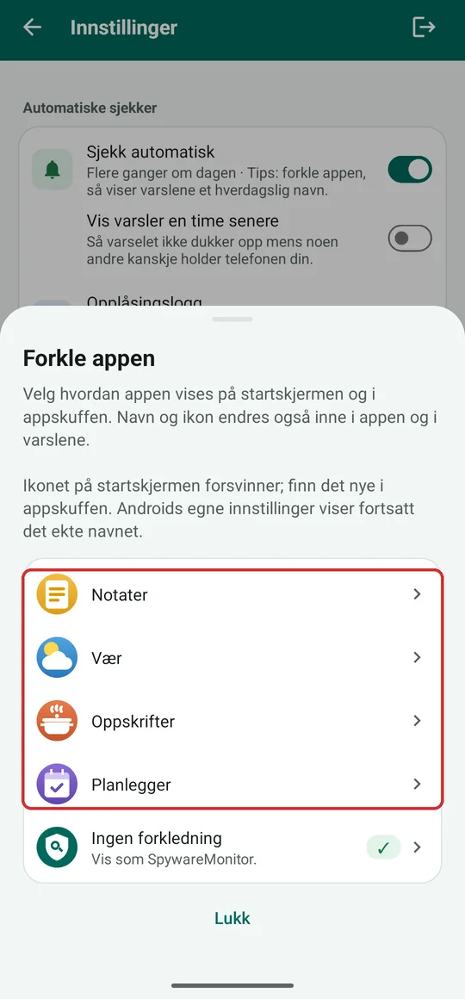
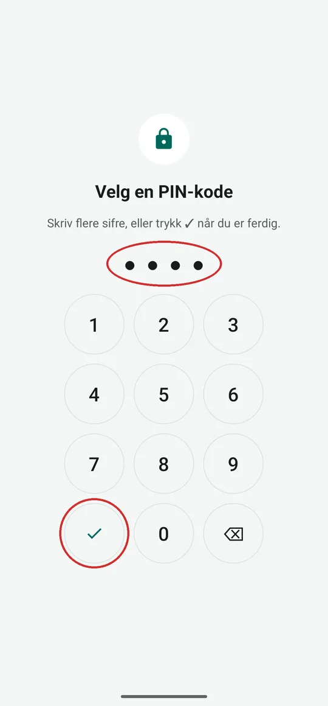
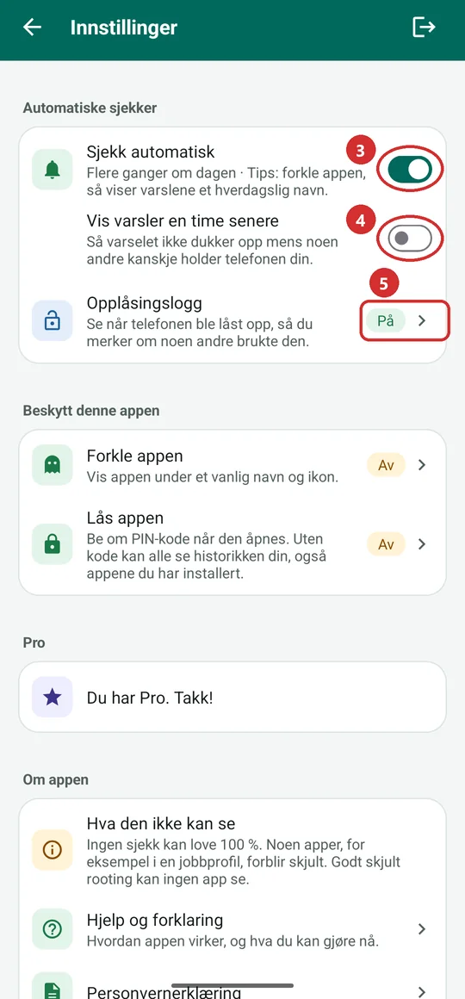
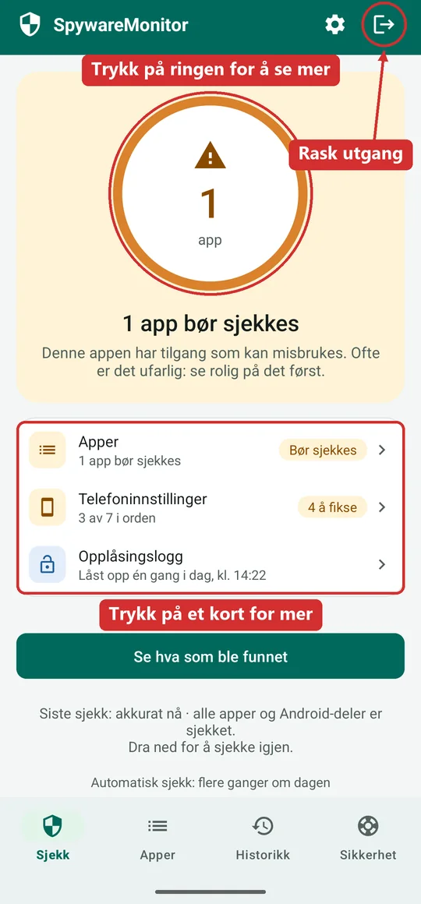
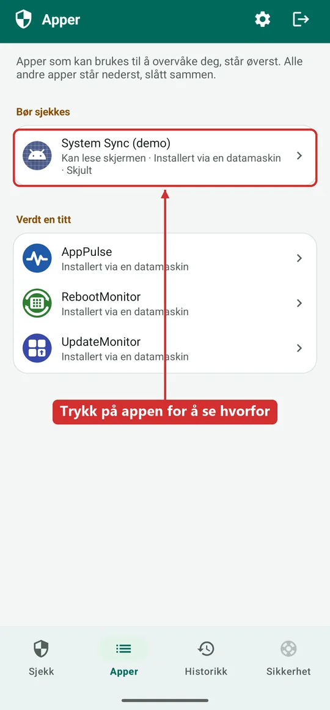
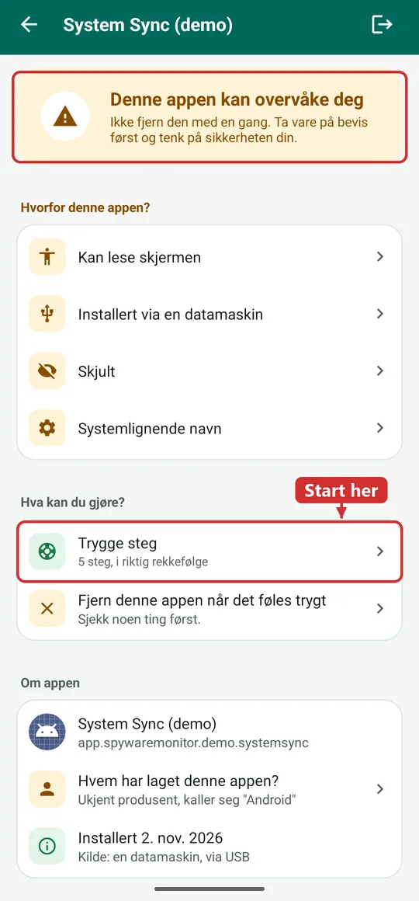
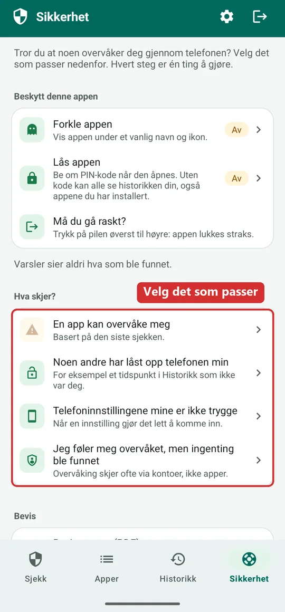
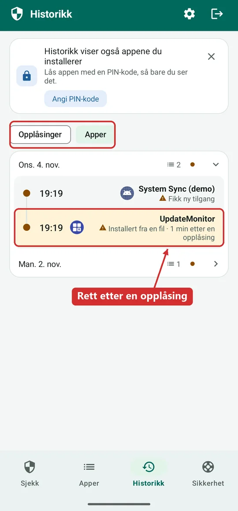

Hjelp til SpywareMonitor: sjekk telefonen for spionprogrammer, steg for steg
For alle som er redde for at noen, for eksempel en partner eller en eks, følger med på Android-telefonen deres i det skjulte. Med enkle ord, ett spørsmål om gangen.
Last ned SpywareMonitor på Google Play Gratis sjekk for Android 8 og nyere
Ta den tiden du trenger. En sjekk bare ser: den endrer ingenting på telefonen, og SpywareMonitor sender ingenting noe sted.
Men vær forsiktig: hvis noen allerede overvåker telefonen din, kan de kanskje se at denne appen ble installert eller åpnet. Kan det gjøre situasjonen farligere for deg, les først denne siden på en annen telefon eller datamaskin, og snakk med noen som kan hjelpe.
I fare akkurat nå? Ring politiet på 112.
Start her · Anbefalt oppsett
Sett opp appen trygt, i 5 steg
Gjør dette først, før alt annet. Det tar omtrent 5 minutter. Etterpå ser den som tar opp telefonen din, en hverdagslig app som de ikke kan åpne, og varslene sier ikke hva som ble funnet.
Steg 1 til 5 krever Pro. Ikke Pro? Hopp til Hold appen privat, også uten Pro nedenfor.
Start i Innstillinger: tannhjulet øverst til høyre i appen.
-
Forkle appen
Trykk på Forkle appen og velg et hverdagslig navn, for eksempel Vær. Appen lukkes og kommer tilbake som Vær, med et værikon. Se etter den i appskuffen (sveip opp på startskjermen): det gamle ikonet på startskjermen er borte.
Hvorfor først? Da viser alt som kommer etterpå, også varslene, allerede det hverdagslige navnet. Ett unntak: når Android spør om appen får sende varsler, viser den appens ekte navn. Appen advarer deg før det skjer, så gjør det steget når ingen ser på.
-
Lås den med en PIN-kode
Trykk på Lås appen, så Velg en PIN-kode. Skriv 4 til 8 sifre, trykk på haken, og skriv den samme koden én gang til.
- Velg en PIN-kode som er en annen enn telefonens PIN-kode: personen du er bekymret for, kjenner kanskje den.
- Fingeravtrykk? Si bare ja hvis ingen andres fingeravtrykk er lagret på telefonen.
- Ikke glem den. En glemt PIN-kode kan bare fjernes ved å slette appens data, og da forsvinner også historikken.
-
Slå på Sjekk automatisk
Da sjekker appen telefonen flere ganger om dagen av seg selv. Du får bare et varsel når noe bør sjekkes, og det sier aldri hva som ble funnet. Trykk på det, eller åpne appen mens det vises, så kommer du rett til det det gjaldt: selve appen, eller Historikk hvis det gjelder flere apper. Prikken på appikonet forsvinner da.
-
Vis varsler en time senere ved behov
Slå på dette hvis noen andre av og til har telefonen din. Da venter et varsel en time før det dukker opp.
-
Slå på Opplåsingslogg
Trykk på Opplåsingslogg og følg stegene: Android ber deg tillate Brukstilgang for appen. Fra da av ser du når telefonen ble låst opp, så du merker om noen brukte den mens du ikke var der.



Hold appen privat, også uten Pro
- Rask utgang: pilen øverst til høyre lukker appen med en gang og holder den unna nylig brukte apper. Bruk den hvis noen kommer inn. Denne nettsiden har også en rød knapp for rask utgang.
- Telefonens egen lås: sørg for at telefonen har en skjermlås som den andre ikke kjenner. Sjekk-skjermen sier fra hvis den mangler.
- Androids innstillinger viser alltid det ekte navnet, SpywareMonitor, også når appen er forkledd.
- Kvitteringen: kvitteringen fra Google på e-post og ordreloggen i Google Play viser alltid det ekte navnet. Husk det hvis noen andre kan lese e-posten din eller komme inn på Google-kontoen din.
- Denne nettsiden vises i nettleserloggen. Åpne den på en annen enhet hvis det er tryggere: i appen viser Innstillinger → Hjelp og forklaring en kode. Rett kameraet på en annen telefon eller et nettbrett mot den, så åpnes denne siden der.
Hva gjør SpywareMonitor?
SpywareMonitor ser på appene på telefonen din og stiller ett spørsmål: kan denne appen brukes til å overvåke deg? Den sjekker:
- Alle installerte apper: kan den lese skjermen eller varslene dine, skjuler den ikonet, ble den installert fra en fil eller en datamaskin i stedet for en appbutikk, later den som den er en del av Android?
- En liste over kjente spionprogrammer (også kalt stalkerware), fra Echap (CC BY 4.0). Listen er bygget inn i appen.
- Telefoninnstillingene: finnes det en skjermlås, er USB-feilsøking og utvikleralternativer av, kan andre apper installere apper? Finnes det tegn på at telefonen er rootet?
Forlater noe telefonen min?
Nei. Appen har ingen internettilgang, så den kan ikke sende noe noe sted. Ikke til oss, ikke til noen. Les mer i personvernerklæringen.
Hva kan den ikke?
- Ingen sjekk er 100 % sikker. Noen apper, for eksempel i en jobbprofil, forblir skjult, og helt nye spionprogrammer står kanskje ikke på listen ennå. Godt skjult rooting kan ingen app se.
- Den kan ikke se kontoene dine. Noen kan følge deg via Google-kontoen, delt posisjon eller en sporingsbrikke, uten noen app på telefonen. Se Jeg føler meg overvåket, men ingenting ble funnet og veiledningen Can someone track your phone without spyware? (engelsk).
- Den fjerner eller endrer aldri noe av seg selv. Du bestemmer.
Vil du heller se? Appen på 83 sekunder
Denne korte videoen (på engelsk) viser det viktigste: sjekken, hva oransje og rødt betyr, hvorfor du ikke bør fjerne en app med en gang, og stegene i Sikkerhet-fanen.
Videoen lastes først fra YouTube når du trykker på avspilling. Du kan også lese hele teksten i videoen (engelsk), eller se den på YouTube.
Hvordan leser jeg Sjekk-skjermen?
Åpne appen, så sjekker den telefonen på noen sekunder. Den store ringen viser resultatet:
- Grønn: ingenting ble funnet som kan overvåke deg.
- Oransje: en app har tilgang som kan misbrukes. Ofte er det ufarlig, som en passordbehandler eller en app til en smartklokke. Se på det først.
- Rød: en app står på listen over kjente spionprogrammer.
Under ringen er det tre kort:
- Apper: hvor mange apper som bør sjekkes.
- Telefoninnstillinger: hvor mange innstillinger som gjør det lett for noen å komme inn.
- Opplåsingslogg (Pro): når telefonen ble låst opp i dag.
Trykk på ringen, eller på Apper, for å se hva som ble funnet. Dra skjermen ned for å sjekke igjen.

Hvilken app ble funnet, og hvorfor?
I fanen Apper står appene som kan brukes til å overvåke deg, øverst, under Bør sjekkes og Verdt en titt. Alle andre apper står nederst, slått sammen, så du også kan finne dem.
Under hver app ser du med noen få ord hva den kan, for eksempel Kan lese skjermen · Installert via en datamaskin · Skjult. Trykk på appen for å se alle grunnene, hvem som har laget den, og når den ble installert.
Apper som er installert fra en datamaskin via USB, står alltid under Verdt en titt. Ofte er det din egen app. Kjenner du appen fordi du la den der selv? Trykk på Jeg kjenner denne appen. Da teller den ikke lenger, og du får beskjed hvis den noen gang blir byttet ut med en annens versjon.
Vil du se selv, uten appen? Les How to find hidden apps on Android (engelsk).

Noe ble funnet. Hva gjør jeg nå?
Ikke fjern appen med en gang. Å fjerne den, eller bytte passordene, kan varsle den som satte den der. Det kan gjøre situasjonen farligere. Ta vare på bevis først, og tenk på sikkerheten din. Mer i veiledningen What to do if you find spyware on your phone (engelsk).
På siden til appen trykker du på Trygge steg. Da får du stegene i riktig rekkefølge:
- Ta vare på bevis: lagre bevisrapporten, eller ta skjermbilder av appen og hva den kan.
- Få hjelp før du endrer noe: snakk om det med noen du stoler på, politiet eller en hjelpelinje, fra en telefon som ikke overvåkes.
- Bytt passordene på en annen enhet: Google først, så e-post og sosiale medier. På denne telefonen kan et spionprogram se hva du skriver.
- Fjern appen, når du har tatt vare på bevisene og det føles trygt.
- Tilbakestill telefonen, hvis appen kommer igjen eller ikke lar seg fjerne. Ta først sikkerhetskopi av bildene, et sted den andre ikke kommer til.
Hvert steg har en knapp som tar deg til riktig sted, for eksempel Lagre rapport eller Se appene.

Hva skjer? Velg det som passer i Sikkerhet-fanen
Åpne fanen Sikkerhet. Under Hva skjer? trykker du på det som passer. Appen foreslår allerede ett, basert på den siste sjekken.
Øverst i fanen, under Beskytt denne appen, finner du også forkledning og PIN-lås.

En app kan overvåke meg
Når sjekken fant noe. Du får de fem stegene ovenfor: ta vare på bevis, få hjelp, bytt passord på en annen enhet, fjern appen, tilbakestill telefonen hvis den kommer igjen.
Noen andre har låst opp telefonen min
For eksempel når Historikk viser en opplåsing på et tidspunkt da du ikke hadde telefonen. Stegene:
- Bytt PIN-koden (eller sett en skjermlås hvis du ikke har noen). Velg en som den andre ikke kan gjette: ikke en fødselsdato, ikke den gamle koden med ett tall endret.
- Steng de andre veiene inn: fjern fingeravtrykk og ansikter du ikke kjenner, og slå av Smart Lock eller Extend Unlock.
- La skjermen låse seg raskere: etter 30 sekunder, så telefonen er låst når du legger den fra deg.
- Se hva som skjedde da: Historikk viser hvilke apper som kom eller fikk tilgang rundt den tiden.
- Sjekk nå, for å se om en app ble lagt på telefonen.
Telefoninnstillingene mine er ikke trygge
Noen innstillinger gjør det lett for noen å komme inn på telefonen og installere apper i det skjulte. Du ser hver av dem med en knapp, Fiks dette, som åpner riktig sted i telefonens innstillinger. For eksempel: angi en skjermlås, slå av USB-feilsøking, slå av utvikleralternativer.
Finner appen tegn på at telefonen er rootet, ser du Denne telefonen kan være rootet. Rooting gir apper full kontroll over telefonen, også spionprogrammer. Har du ikke gjort det selv, be noen du stoler på om å se på det. Denne linjen vises bare når det finnes tegn.
Jeg føler meg overvåket, men ingenting ble funnet
Overvåking skjer ofte via kontoer, ikke apper. Stegene:
- Slutt å dele posisjonen din i Google Maps (profilbildet ditt, så Posisjonsdeling). Sjekk også apper som sporer familien.
- Sjekk enhetene på Google-kontoen og logg ut dem du ikke kjenner.
- Sjekk e-post og nummer for gjenoppretting. Er de ikke dine, kan noen andre komme inn på kontoen.
- Se etter en skjult sporer: en liten brikke i en veske eller bil kan vise hvor du er. Åpne Sikkerhet og nødssituasjoner i Innstillinger, så Varsler om ukjente sporere, og trykk Skann nå.
Gjør endringer i kontoer på en annen telefon eller datamaskin, en som den andre ikke kommer til.
Hvordan bruker jeg Historikk? Pro
Fanen Historikk viser, dag for dag, når telefonen ble låst opp og hvilke apper som kom eller forsvant.
Bruk de to knappene øverst: Opplåsinger viser når telefonen ble låst opp, Apper viser hvilke apper som ble installert, fikk tilgang eller ble fjernet. Vanlige nye apper vises også, ved siden av apper som kan overvåke deg. Dager som bør sjekkes, får en oransje prikk. Trykk på en dag for å se tidspunktene.
Se etter en opplåsing på et tidspunkt da du ikke hadde telefonen, rett før en app ble installert. Historikk sier det til og med, for eksempel Installert fra en fil · 1 min etter en opplåsing.
Trykk på et varsel fra appen, så åpner den Historikk på appene, eller selve appen hvis det gjelder én app, så du ser med en gang hva som endret seg.

Hva får jeg med SpywareMonitor Pro?
Pro er én betaling, uten abonnement. Fortsatt uten internett og uten reklame. Du får:
- Automatiske sjekker: flere ganger om dagen, så en ny app som regel blir oppdaget samme dag. Du får bare et varsel når noe bør sjekkes. Det sier aldri hva som ble funnet og bruker aldri ordet spionprogram: det viser bare appens navn og Trykk for å åpne. Vil du, venter det en time. Slå dem på i steg 3 og 4 i oppsettet.
- Opplåsingslogg: spionprogrammer kommer vanligvis inn på en telefon mens noen har den opplåst i hendene. Loggen viser når telefonen ble låst opp, så du ser om det skjedde mens du ikke var der. Den viser bare vellykkede opplåsinger: ikke mislykkede forsøk, ikke hva som ble gjort og ikke hvem som gjorde det. Du gir selv tillatelse i Android (Brukstilgang), og kan slå det av der når som helst. Se steg 5.
- Historikk: når hvilken app ble installert, fikk tilgang eller ble fjernet. Se Hvordan bruker jeg Historikk?
- Bevisrapport (PDF): alle funn og historikken i én fil, til å vise politiet eller en hjelpelinje. Den lages på språket appen er på. Appen lager den på telefonen og åpner Androids delingsmeny; du bestemmer hvor den sendes. Filen får et nøytralt navn, for eksempel report-2026-11-13-1430.pdf, uten appens navn. Du finner den i Sikkerhet-fanen under Bevis.
- Forkledning og PIN-lås: se steg 1 og 2 i oppsettet.
Godt å vite: Android viser alltid appens navn øverst i et varsel. Derfor forkler oppsettet appen først: da viser varselet det hverdagslige navnet.
Hvor kan jeg få hjelp?
Du trenger ikke stå alene i dette. Ring fra en telefon som ikke overvåkes.
- I fare akkurat nå? Ring politiet på 112.
- Vold- og overgrepslinjen: 116 006. Gratis og anonymt, døgnet rundt. De hjelper også når telefonen din blir overvåket.
- Politiet på 02800, også når det ikke haster, hvis du vil anmelde det som skjer.
- Noen du stoler på, for eksempel en venn, et familiemedlem eller fastlegen din.
Ta med bevisrapporten eller skjermbildene dine. De hjelper politiet eller en hjelpelinje å forstå hva som har skjedd.
Vanlige spørsmål
Hvordan kan jeg se om noen overvåker Android-telefonen min?
SpywareMonitor sjekker alle installerte apper for tilgang som kan brukes til å overvåke deg, for eksempel å lese skjermen eller varslene, skjule ikonet eller være installert utenfor en appbutikk. Den sammenligner også appene med en liste over kjente spionprogrammer (stalkerware) og sjekker telefoninnstillinger som gjør det lettere for noen å komme inn. Alt skjer på telefonen din; ingenting sendes noe sted.
Hva betyr oransje og rødt i SpywareMonitor?
Oransje betyr at en app har tilgang som kan misbrukes. Ofte er det ufarlig, for eksempel en passordbehandler eller en app til en smartklokke, så se på det først. Rødt betyr at appen står på listen over kjente spionprogrammer.
SpywareMonitor fant noe. Skal jeg fjerne appen med en gang?
Nei. Å fjerne en app eller bytte passord kan varsle den som satte den der. Ta først vare på bevis (bevisrapporten eller skjermbilder), og få så hjelp fra noen du stoler på, politiet eller en hjelpelinje, fra en telefon som ikke overvåkes. Fjern appen når det føles trygt. Sikkerhet-fanen viser stegene i riktig rekkefølge.
Sender SpywareMonitor dataene mine noe sted?
Nei. Appen har ingen internettilgang, så den kan ikke sende noe. Det den sjekker og registrerer, blir på telefonen og tas ikke med i skysikkerhetskopien.
Kan den som overvåker meg se at jeg bruker SpywareMonitor?
Det kan skje hvis de har telefonen din i hendene. Med Pro kan du forkle appen som Notater, Vær, Oppskrifter eller Planlegger og låse den med en PIN-kode. Varsler sier aldri hva som ble funnet, men Android viser alltid appens navn i dem. Kvitteringen fra Google på e-post og ordreloggen i Google Play viser også appens navn.
Hva er den tryggeste måten å sette opp SpywareMonitor på?
Gjør fem ting først, i Innstillinger: 1. Forkle appen, for eksempel som Vær. 2. Lås den med en PIN-kode som er en annen enn telefonens, og bruk bare fingeravtrykk hvis ingen andres er lagret. 3. Slå på Sjekk automatisk, så sjekker den flere ganger om dagen. 4. Har andre av og til telefonen din, slå på Vis varsler en time senere. 5. Slå på Opplåsingslogg. Husk pilen for rask utgang øverst til høyre.
Jeg føler meg overvåket, men SpywareMonitor fant ingenting. Hva nå?
Overvåking skjer ofte via kontoer, ikke apper. Slutt å dele posisjonen din i Google Maps, sjekk enhetene som er logget inn på Google-kontoen, sjekk e-post og nummer for gjenoppretting, og se etter en skjult sporer. Gjør endringer i kontoer på en annen telefon eller datamaskin.
Er en sjekk for spionprogrammer 100 % sikker?
Ingen sjekk kan love 100 %. Noen apper, for eksempel i en jobbprofil, forblir skjult, og nye spionprogrammer står kanskje ikke på listen ennå. Føler du deg fortsatt utrygg, snakk med politiet eller en hjelpelinje.
Flere veiledninger (på engelsk)
- Slik sjekker du en Android-telefon for spionprogrammer — hva du ser etter, og hva en skanning kan og ikke kan bevise.
- Slik finner du skjulte apper på Android — hele applisten, apper uten ikon og spesialtilgang.
- Hva du gjør hvis du finner spionprogrammer — sikkerhet først, bevis og hjelp.
- Kan noen spore telefonen uten spionprogrammer? — kontoer, posisjonsdeling, tilkoblede enheter og sporingsbrikker.
Spørsmål om appen?
Last ned SpywareMonitor på Google Play, les hva SpywareMonitor er og personvernerklæringen, eller kontakt oss.